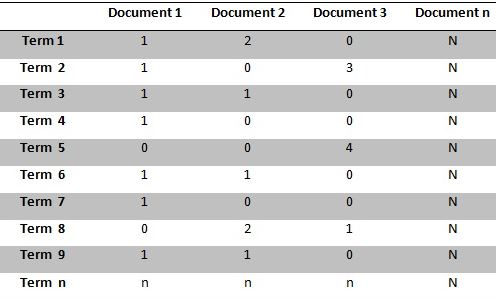

Topic Modelling using LSA
Contents
Topic Modelling using LSA#
Algoritma LSA (Latent Semantic Analysis) adalah salah satu algoritma yang dapat digunakan untuk menganalisa hubungan antara sebuah frase/kalimat dengan sekumpulan dokumen.
Pada program ini akan menggunakan data abstrak dari portal tugas akhir trunojoyo program studi Teknik Informatika (https://pta.trunojoyo.ac.id/c_search/byprod/10), berikut code untuk melakukan crawling data:
Crawling Data#
Proses pertama yaitu pengambilan data abstrak dari portal tugas akhir menggunakan teknik crawling. Crawling merupakan teknik mengumpulkan data pada sebuah website dengan memasukkan Uniform Resource Locator (URL).
Install Library#
Library yang digunakan adalah beautifulsoap4, jalankan perintah berikut untuk proses instalasi.
pip install beautifulsoup4
Requirement already satisfied: beautifulsoup4 in c:\users\lenovo-pc\appdata\local\programs\python\python310\lib\site-packages (4.11.1)
Requirement already satisfied: soupsieve>1.2 in c:\users\lenovo-pc\appdata\local\programs\python\python310\lib\site-packages (from beautifulsoup4) (2.3.2.post1)
Note: you may need to restart the kernel to use updated packages.
WARNING: You are using pip version 21.2.4; however, version 22.1.2 is available.
You should consider upgrading via the 'C:\Users\lenovo-pc\AppData\Local\Programs\Python\Python310\python.exe -m pip install --upgrade pip' command.
Import Library#
Selanjutnya import library yang digunakan.
# import library
from bs4 import BeautifulSoup
import requests
import csv
Proses Crawling#
Membuat function crawlAbstract, untuk mengambil data judul dan abstrak
def crawlAbstract(src):
# inisialisasi beautifulsoup4
global c
tmp = []
page = requests.get(src)
soup = BeautifulSoup(page.content, 'html.parser')
# mengambil data judul
title = soup.find(class_="title").getText()
tmp.append(title)
# mengambil data abstract
abstractText = soup.p.getText()
tmp.append(abstractText)
return tmp
Lalu function getLinkToAbstract berguna untuk mengambil link dari daftar jurnal menuju halaman detail abstrak, function ini akan langsung memanggil crawlAbstract().
def getLinkToAbstract(src):
# inisialisasi beautifulsoup4
global c
page = requests.get(src)
soup = BeautifulSoup(page.content, 'html.parser')
# mendapatkan semua link menuju halaman detail
items = soup.find(class_="items").find_all('a')
# looping setiap link untuk mendapatkan nilai href,
# link tersebut digunakan sebagai parameter function crawlAbstract agar mendapat data judul dan abstract
for item in items:
if item.get('href') != '#':
tmp = crawlAbstract(item.get('href'))
# dataAbstract menampung data sementara hasil crawl
dataAbstract.append(tmp)
Selanjutnya code untuk pemanggilan function, akan dilakukan looping untuk mengurutkan halaman daftar jurnal dari page 1 sampai 100, setiap iterasi akan mengambil link menuju halaman detail abstrak (melalui function getLinkToAbstract()). Looping selanjutnya bertujuan untuk menambahkan id di setiap abstrak hasil crawling
# link = "https://pta.trunojoyo.ac.id/c_search/byprod/10"
for i in range(1, 101):
# memindah halaman menuju halaman selanjutnya
src = f"https://pta.trunojoyo.ac.id/c_search/byprod/10/{i}"
# counter untuk melihat progress berapa persen proses crawling
print(f"Proses-{i}%")
# memanggil function getLinkToAbstract untuk mendapatkan setiap link ke halaman detail
getLinkToAbstract(src)
# menambahkan id di setiap abstrak
for i in range(1, len(dataAbstract)+1):
dataAbstract[i-1].insert(0, i)
dataFix.append(dataAbstract[i-1])
Proses-1%
---------------------------------------------------------------------------
NameError Traceback (most recent call last)
Input In [5], in <cell line: 2>()
6 print(f"Proses-{i}%")
7 # memanggil function getLinkToAbstract untuk mendapatkan setiap link ke halaman detail
----> 8 getLinkToAbstract(src)
10 # menambahkan id di setiap abstrak
11 for i in range(1, len(dataAbstract)+1):
Input In [4], in getLinkToAbstract(src)
13 tmp = crawlAbstract(item.get('href'))
14 # dataAbstract menampung data sementara hasil crawl
---> 15 dataAbstract.append(tmp)
NameError: name 'dataAbstract' is not defined
Menyimpan data hasil crawling#
Semua hasil abstrak akan disimpan format csv dengan nama file dataHasilCrawl.csv
header = ['index', 'title','abstract']
with open('dataHasilCrawl.csv', 'w', encoding="utf-8") as f:
write = csv.writer(f)
write.writerow(header)
write.writerows(dataFix)
Code Lengkap Crawling Data#
Berikut adalah code lengkap proses crawling data:
# import library
from bs4 import BeautifulSoup
import requests
import csv
# membuat list, dataAbstract untuk menampung data sementara setelah crawling
# dataFix untuk menampung data yang sudah ditambahkan kolom index dan siap di convert ke csv
dataAbstract = []
dataFix = []
# function crawlAbstract untuk mengambil data judul dan abstract dari halaman detail pta trunojoyo teknik informatika
def crawlAbstract(src):
# inisialisasi beautifulsoup4
global c
tmp = []
page = requests.get(src)
soup = BeautifulSoup(page.content, 'html.parser')
# mengambil data judul
title = soup.find(class_="title").getText()
tmp.append(title)
# mengambil data abstract
abstractText = soup.p.getText()
tmp.append(abstractText)
return tmp
# function getLinkToAbstract digunakan untuk mengambil data link menuju halaman detail
# parameter src berisi link halaman daftar tugas akhir
def getLinkToAbstract(src):
# inisialisasi beautifulsoup4
global c
page = requests.get(src)
soup = BeautifulSoup(page.content, 'html.parser')
# mendapatkan semua link menuju halaman detail
items = soup.find(class_="items").find_all('a')
# looping setiap link untuk mendapatkan nilai href,
# link tersebut digunakan sebagai parameter function crawlAbstract agar mendapat data judul dan abstract
for item in items:
if item.get('href') != '#':
tmp = crawlAbstract(item.get('href'))
# dataAbstract menampung data sementara hasil crawl
dataAbstract.append(tmp)
# link halaman pta trunojoyo prodi teknik informatika yang akan di crawl
# halaman ini berisi daftar tugas akhir
link = "https://pta.trunojoyo.ac.id/c_search/byprod/10"
# mengambil data sampai halaman 100
for i in range(1, 101):
# memindah halaman menuju halaman selanjutnya
src = f"https://pta.trunojoyo.ac.id/c_search/byprod/10/{i}"
# counter untuk melihat progress berapa persen proses crawling
print(f"Proses-{i}%")
# memanggil function getLinkToAbstract untuk mendapatkan setiap link ke halaman detail
getLinkToAbstract(src)
# setelah memperoleh semua data abstract, data tersebut ditampung di list dataAbstract
# data perlu ditambahkan kolom index sebagai id
# looping berikut bertujuan menambahkan kolom index di setiap baris, lalu disimpan di list dataFix
for i in range(1, len(dataAbstract)+1):
dataAbstract[i-1].insert(0, i)
dataFix.append(dataAbstract[i-1])
# menyimpan data hasil crawl dengan format csv
header = ['index', 'title','abstract']
with open('dataHasilCrawl.csv', 'w', encoding="utf-8") as f:
write = csv.writer(f)
write.writerow(header)
write.writerows(dataFix)
# akan ada file dataHasilCrawl.csv berisi id, judul dan abtrak dari pta trunojoyo teknik informatika sejumlah 500 record
# proses crawling selesai
Pre-Processing#
Tahap selanjutnya melakukan pre-processing data yang bertujuan agar kualitas data yang digunakan memiliki hasil yang baik dan konsisten. Pre-Processing yang akan dilakukan adalah Case Folding, Punctuation Removal, Stopwords
Install Library#
Install terlebih dahulu library yang akan digunakan: Sastrawi digunakan untuk proses stopword
pip install sastrawi
Import Library#
Import library dan persiapan, library yang digunakan adalah sastrawi yang digunakan dalam proses stemming dan stopwords
import csv # untuk menyimpan hasil dalam format csv
import string
import re # re : digunakan untuk proses punctuation removal
# memanggil function yang digunakan
from Sastrawi.Stemmer.StemmerFactory import StemmerFactory
from Sastrawi.StopWordRemover.StopWordRemoverFactory import StopWordRemoverFactory
# membuat list untuk menampung data
dataAbstract = []
dataAfterPreprocessing = []
# inisialisasi library sastrawi untuk stemming
factory = StemmerFactory()
stemmer = factory.create_stemmer()
# inisialisasi library sastrawi untuk proses stopword removal
factory2 = StopWordRemoverFactory()
stopword = factory2.create_stop_word_remover()
# untuk counter proses
count = 1
Load Dataset#
Selanjutnya dilakukan proses data load dari file dataHasilCrawl.csv
with open("dataHasilCrawl.csv", "r") as f:
reader = csv.reader(f)
next(reader, None)
for row in reader:
if len(row) != 0:
# data sebelum proses disimpan pada list dataAbstract
dataAbstract.append(row)
Pre-Processing#
Akan dilakukan pre-processing yang meliputi:
Case Folding Case folding merupakan proses dalam text preprocessing yang dilakukan untuk menyeragamkan karakter pada data. Proses case folding adalah proses mengubah seluruh huruf menjadi huruf kecil. Pada proses ini karakter-karakter ‘A’-‘Z’ yang terdapat pada data diubah kedalam karakter ‘a’-‘z’
Punctuation Removal Punctuation Removal adalah proses menghilangkan tanda baca, simbol, angka dan spasi yang tidak perlu dalam dataset.
Stemming Stemming adalah proses pemetaan dan penguraian bentuk dari suatu kata menjadi bentuk kata dasarnya. Secara sederhana, proses mengubah kata berimbuhan menjadi kata dasar.
Stopwords Stopwords adalah kata yang diabaikan dalam pemrosesan karena merupakan kata umum yang mempunyai fungsi tapi tidak mempunyai arti.
Berikut adalah code untuk melakukan pre-processing data:
for abstract in dataAbstract:
# ambil data
tmp = abstract.pop()
# lakukan case folding (mengubah teks menjadi bentuk standar: huruf kecil)
tmp = tmp.lower()
# menghapus angka
tmp = re.sub(r"\d+", "", tmp)
# menghapus tanda baca
tmp = tmp.translate(str.maketrans("","",string.punctuation))
# menghapus whitespace
tmp = tmp.strip()
tmp = re.sub('\s+',' ',tmp)
# melakukan proses stemming
# tmp = stemmer.stem(tmp)
# melakukan proses stopword removal
tmp = stopword.remove(tmp)
# menambahkan data ke list dataAfterPreprocessing
abstract.append(tmp)
dataAfterPreprocessing.append(abstract)
# print counter proses
print(f"Proses:{count}/{len(dataAbstract)}")
count+=1
Menyimpan data hasil Pre-Processing#
data hasil preprocessing disimpan dalam bentuk csv dengan nama file dataAfterPreprocessing.csv
# menyimpan data dari list dataAfterPreprocessing ke bentuk csv
header = ['index', 'title','abstract_cleaned']
with open('dataAfterPreprocessing.csv', 'w', encoding="utf-8") as f:
write = csv.writer(f)
write.writerow(header)
write.writerows(dataAfterPreprocessing)
Code lengkap Pre-Processing#
Berikut adalah code lengkap Pre-Processing
import csv # untuk menyimpan hasil dalam format csv
import string
import re # re : digunakan untuk proses punctuation removal
# memanggil function yang digunakan
from Sastrawi.Stemmer.StemmerFactory import StemmerFactory
from Sastrawi.StopWordRemover.StopWordRemoverFactory import StopWordRemoverFactory
# membuat list untuk menampung data
dataAbstract = []
dataAfterPreprocessing = []
# inisialisasi library sastrawi untuk stemming
factory = StemmerFactory()
stemmer = factory.create_stemmer()
# inisialisasi library sastrawi untuk proses stopword removal
factory2 = StopWordRemoverFactory()
stopword = factory2.create_stop_word_remover()
# untuk counter proses
count = 1
# membaca data dari proses sebelumnya
with open("dataHasilCrawl.csv", "r") as f:
reader = csv.reader(f)
next(reader, None)
for row in reader:
if len(row) != 0:
# data sebelum proses disimpan pada list dataAbstract
dataAbstract.append(row)
# looping untuk memproses setiap data
for abstract in dataAbstract:
# ambil data
tmp = abstract.pop()
# lakukan case folding (mengubah teks menjadi bentuk standar: huruf kecil)
tmp = tmp.lower()
# menghapus angka
tmp = re.sub(r"\d+", "", tmp)
# menghapus tanda baca
tmp = tmp.translate(str.maketrans("","",string.punctuation))
# menghapus whitespace
tmp = tmp.strip()
tmp = re.sub('\s+',' ',tmp)
# melakukan proses stemming
# tmp = stemmer.stem(tmp)
# melakukan proses stopword removal
tmp = stopword.remove(tmp)
# menambahkan data ke list dataAfterPreprocessing
abstract.append(tmp)
dataAfterPreprocessing.append(abstract)
# print counter proses
print(f"Proses:{count}/{len(dataAbstract)}")
count+=1
# menyimpan data dari list dataAfterPreprocessing ke bentuk csv
header = ['index', 'title','abstract_cleaned']
with open('dataAfterPreprocessing.csv', 'w', encoding="utf-8") as f:
write = csv.writer(f)
write.writerow(header)
write.writerows(dataAfterPreprocessing)
# akan ada file dataAfterPreprocessing.csv berisi id, judul, abtract yang sudah dipreprocessing
# preprocessing sudah selesai
Permodelan dengan LSA#
Masuk ke tahap penerapan Latent Semantic Analysis (LSA)
Install Library#
install library yang akan digunakan yaitu sklearn, pandas, matplotlib dan seaborn.
pip install sklearn
pip install pandas
pip install matplotlib
pip install seaborn
Import Library#
Berikut adalah proses import library dan inisialisasi library sebelum digunakan.
# inisialisasi semua library yg digunakan
import numpy as np
import pandas as pd
import nltk
import matplotlib.pyplot as plt
from matplotlib import style
import seaborn as sns
# mengatur tampilan matplotlib ketika menampilkan data
%matplotlib inline
style.use('fivethirtyeight')
sns.set(style='whitegrid',color_codes=True)
# menggunakan library sklearn untuk membuat tfidf, disini baru import function-nya dulu
from sklearn.feature_extraction.text import TfidfVectorizer,CountVectorizer
# from nltk.corpus import stopwords #stopwords
# stop_words=set(nltk.corpus.stopwords.words('indonesian'))
Load Dataset#
Berikut adalah code untuk membaca data dari dataAfterPreprocessing.csv, karena yang digunakan hanya kolom abstrak, maka kolom id dan title dihapus.
# membaca data
df=pd.read_csv('./dataAfterPreprocessing.csv')
# menampilkan data
df.head()
| index | title | abstract_cleaned | |
|---|---|---|---|
| 0 | 1 | PERANCANGAN DAN IMPLEMENTASI SISTEM DATABASE \... | sistem informasi akademik siakad merupakan sis... |
| 1 | 2 | APLIKASI KONTROL DAN MONITORING JARINGAN KOMPU... | berjalannya koneksi jaringan komputer lancar g... |
| 2 | 3 | RANCANG BANGUN APLIKASI PROXY SERVER UNTUK\r\n... | web server sebuah perangkat lunak server berfu... |
| 3 | 4 | SISTEM PENDUKUNG KEPUTUSAN OPTIMASI PENJADWALA... | penjadwalan kuliah perguruan tinggi merupakan ... |
| 4 | 5 | SISTEM AUGMENTED REALITY ANIMASI BENDA BERGERA... | seiring perkembangan teknologi ada didunia mun... |
Menghapus kolom id dan title
# menghapus data index dan title karena tidak digunakan
df.drop(['index'],axis=1,inplace=True)
df.drop(['title'],axis=1,inplace=True)
Data abstract siap digunakan
# menampilkan 10 baris data
df.head(10)
| abstract_cleaned | |
|---|---|
| 0 | sistem informasi akademik siakad merupakan sis... |
| 1 | berjalannya koneksi jaringan komputer lancar g... |
| 2 | web server sebuah perangkat lunak server berfu... |
| 3 | penjadwalan kuliah perguruan tinggi merupakan ... |
| 4 | seiring perkembangan teknologi ada didunia mun... |
| 5 | gerak pekerja game memiliki genre rts realtime... |
| 6 | perkembangan game semakin pesat memberikan ber... |
| 7 | sistem pengenalan wajah suatu sistem mengenali... |
| 8 | teknologi mobile game beroperating system open... |
| 9 | kantor badan kepegawaian kota bangkalan instan... |
Extracting Feature dan Membuat Document Term-Matrix (DTM)#
Nilai DTM menggunakan nilai TF-Idf. Beberapa poin penting yang perlu diperhatikan:
LSA pada umumnya diimplementasikan dengan menggunakan nilai TF-Idf dan tidak dengan Count Vectorizer.
Nilai parameter max_feature bergantung pada daya komputasi.
Nilai default untuk min_df dan max_df agar program dapat bekerja dengan baik.
Bisa menggunakan nilai ngram_range yang berbeda.
# menghitung tfidf
vect =TfidfVectorizer(stop_words=stop_words,max_features=1000)
vect_text=vect.fit_transform(df['abstract_cleaned'].values.astype('U'))
type(vect)
sklearn.feature_extraction.text.TfidfVectorizer
Dapat dilihat pada hasilnya, kata yang sering muncul dan jarang muncul dalam abstrak yang ada dalam idf. Apabila hasil memiliki nilai yang kecil maka kata tersebut lebih umum digunakan dalam dokumen (abstrak PTA)
Document Term Matrix (DTM)#
Setiap baris mewakili sebuah kata yang unik, sedangkan setiap kolom mewakili konteks dari mana kata-kata tersebut diambil. Konteks yang dimaksud bisa berupa kalimat, paragraf, atau seluruh bagian dari teks. Berikut adalah term-document matrix:

print(vect_text.shape)
# print(vect_text)
type(vect_text)
vect_text = vect_text.transpose()
df = pd.DataFrame(vect_text.toarray())
print(df.head(5))
(1000, 500)
0 1 2 3 4 5 6 7 8 9 ... 990 991 \
0 0.0 0.0 0.0 0.0 0.0 0.0 0.0 0.0 0.000000 0.0 ... 0.0 0.0
1 0.0 0.0 0.0 0.0 0.0 0.0 0.0 0.0 0.327224 0.0 ... 0.0 0.0
2 0.0 0.0 0.0 0.0 0.0 0.0 0.0 0.0 0.000000 0.0 ... 0.0 0.0
3 0.0 0.0 0.0 0.0 0.0 0.0 0.0 0.0 0.000000 0.0 ... 0.0 0.0
4 0.0 0.0 0.0 0.0 0.0 0.0 0.0 0.0 0.000000 0.0 ... 0.0 0.0
992 993 994 995 996 997 998 999
0 0.000000 0.0 0.0 0.0 0.0 0.0 0.0 0.0
1 0.000000 0.0 0.0 0.0 0.0 0.0 0.0 0.0
2 0.392931 0.0 0.0 0.0 0.0 0.0 0.0 0.0
3 0.000000 0.0 0.0 0.0 0.0 0.0 0.0 0.0
4 0.000000 0.0 0.0 0.0 0.0 0.0 0.0 0.0
[5 rows x 1000 columns]
Kita sekarang dapat melihat kata-kata yang paling sering dan langka di abstrak berdasarkan skor idf. Semakin kecil nilainya berarti kata tersebut lebih sering digunakan (umum) dalam abstrak.
idf=vect.idf_
dd=dict(zip(vect.get_feature_names(), idf))
l=sorted(dd, key=(dd).get)
# print(l)
print(l[0],l[-1])
print(dd['hasil'])
print(dd['telapak'])
hasil telapak
1.3701673260271405
6.523458920524919
Dapat dilihat kata paling sering digunakan adalah “hasil” sementara kata paling jarang digunakan adalah “telapak”
Latent Semantic Analysis (LSA)#
LSA pada dasarnya adalah dekomposisi dari nilai tunggal. Singular Value Decomposition (SVD) akan menguraikan DTM menjadi tiga matriks:
\(A_{m n}=U_{m m} x S_{m n} x V_{n n}^{T}\)
Matriks U = Pada matriks ini, baris mewakili vektor dokumen pada topik Matriks V = Baris pada matriks ini mewakili vektor istilah yang dinyatakan pada topik Matriks S = Matriks diagonal yang memiliki elemen-elemen diagonal sebagai nilai singular dari A
Pada setiap baris dari matriks U (matriks istilah dari dokumen) merupakan representasi vektor yang ada dalam dokumen yang sesuai. Panjang vektor ini ialah jumlah topik yang diinginkan. Representasi dari vektor untuk suku yang ada dalam data dapat ditemui dalam matriks V.
Jadi, SVD memberikan nilai vektor pada setiap dokumen dan juga istilah dalam data. Panjang dari setiap vektor adalah k. Vektor ini digunakan untuk menentukan kata dan dokumen serupa dalam metode kesamaan kosinus.
Dapat digunakan fungsi truncastedSVD untuk mengimplementasikan LSA. Parameter n_components merupakan jumlah topik yang akan diekstrak. Model tersebut nantinya akan di fit dan ditransformasikan pada hasil yang diberikan oleh vectorizer.
from sklearn.decomposition import TruncatedSVD
lsa_model = TruncatedSVD(n_components=10, algorithm='randomized', n_iter=10, random_state=42)
lsa_top=lsa_model.fit_transform(vect_text)
print(lsa_top)
print(lsa_top.shape) # (no_of_doc*no_of_topics)
[[ 0.25314743 -0.07926497 -0.15779302 ... 0.07078405 -0.15720191
0.08248597]
[ 0.08594745 -0.03921934 -0.01889975 ... -0.0277596 -0.07017209
-0.03474838]
[ 0.10875014 -0.05476071 -0.01671957 ... 0.27305754 -0.01860027
-0.00717952]
...
[ 0.21358561 -0.01412773 -0.09962852 ... -0.23532446 0.11006678
0.23077264]
[ 0.28543252 -0.044966 -0.11713009 ... -0.01439869 0.01721985
-0.06424741]
[ 0.19844412 -0.07808743 0.01047994 ... 0.01968828 0.01092608
-0.10894619]]
(500, 10)
l=lsa_top[0]
print("Document 0 :")
for i,topic in enumerate(l):
print("Topic ",i," : ",topic*100)
Document 0 :
Topic 0 : 25.314742581593652
Topic 1 : -7.92649675944443
Topic 2 : -15.779302240752369
Topic 3 : -14.716978564412589
Topic 4 : 3.1661880386549996
Topic 5 : -10.053559857839996
Topic 6 : 5.665605564559997
Topic 7 : 7.078404802169859
Topic 8 : -15.720191082463902
Topic 9 : 8.248596705601583
print(lsa_model.components_.shape) # (no_of_topics*no_of_words)
print(lsa_model.components_)
(10, 1000)
[[ 0.01990259 0.00868318 0.01116126 ... 0.0112083 0.00893897
0.01253246]
[-0.01279456 0.00508693 0.00048887 ... -0.00664785 -0.0040516
-0.00555939]
[-0.00221451 -0.00221382 -0.00424869 ... -0.00809025 -0.00825992
-0.01063404]
...
[-0.00339135 0.00548564 0.00708094 ... 0.01098567 -0.01600809
-0.02055816]
[ 0.00294209 0.0022143 0.00645995 ... 0.01137881 0.0334048
0.05155663]
[-0.0035613 -0.00520553 -0.00259026 ... 0.00077315 -0.03029028
-0.04712787]]
Hasil#
Berikut adalah 10 kata penting dalam setiap topik
# most important words for each topic
vocab = vect.get_feature_names()
for i, comp in enumerate(lsa_model.components_):
vocab_comp = zip(vocab, comp)
sorted_words = sorted(vocab_comp, key= lambda x:x[1], reverse=True)[:10]
print("Topic "+str(i)+": ")
for t in sorted_words:
print(t[0],end=" ")
print("\n")
Topic 0:
citra sistem data metode game siswa nilai hasil informasi proses
Topic 1:
citra segmentasi fitur tahap wajah darah penyakit ekstraksi pembuluh akurasi
Topic 2:
game citra edukasi pembelajaran anak android permainan menarik matematika bahasa
Topic 3:
siswa keputusan kriteria pendukung beasiswa segmentasi game citra metode saw
Topic 4:
siswa pembelajaran elearning guru belajar sekolah media aplikasi materi bahasa
Topic 5:
wajah pengenalan siswa distance ekspresi analysis euclidean tangan pembelajaran training
Topic 6:
arsitektur perusahaan erp sistem zf driven penilaian enterprise model wajah
Topic 7:
beasiswa dokumen pencarian web bahasa informasi keputusan madura semantik sistem
Topic 8:
madura bahasa batik pembelajaran elearning belajar model indonesia perusahaan mahasiswa
Topic 9:
batik citra siswa warna pencarian sekolah tekstur isi game akademik